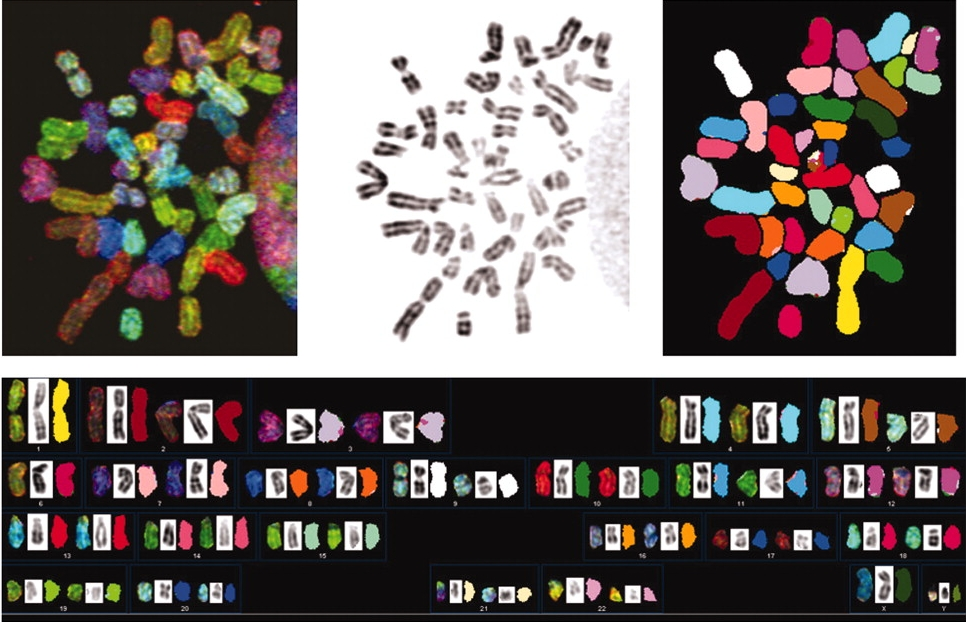
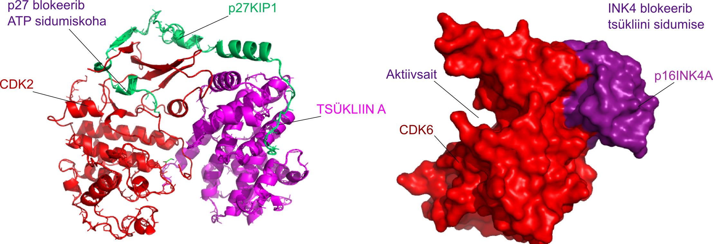

Rakutsükli kontroll
Onkobioloogia
Taavi Päll
vanemteadur, VTAK
Recap
Tuumorsupressorgeenid
Tuumorsupressorgeen, või antionkogeen, on geen mis hoiab ära raku transformatsiooni. Kui see geen muteerub rakus ja tema funktsioon kaob või väheneb, siis võib see rakk areneda vähiks. Tavaliselt on vaja ka teisi onkogeenseid lisamuutusi (Wikipedia).
Rakutsükkel
http://tpall.github.io/Rakutsyklikontroll
Rakutsükkel
- Rakutsükkel on järjestikuste sündmuste jada mille käigus rakk duplitseerib kõik oma koostisosad ja jaguneb kaheks tütarrakuks.
- Rakutsüklit kontrolliv 'masinavärk' on universaalne kõigis organismi rakutüüpides.
- Raku rakutsüklisse sisenemist ja 'masinavärgi käivitamist' reguleerivad raku väliskeskkonna signaalid.
- Rakutsüklis on neli järjestikust faasi G1 \(\rightarrow\) S \(\rightarrow\) G2 \(\rightarrow\) M.
- Mittejagunev rakk on vaikeolekus (quiescence) ehk G0 faasis.
Rakutsükli käivitamist reguleerivad rakuvälised signaalid
- Eksponentsiaalselt kasvav imetajarakk peab peale igat raku jagunemist otsustama,
- kas kasvada ja jaguneda veel üks tsükkel või
- jääda vaikeolekusse.
- Seda otsust mõjutavad mitogeensed kasvufaktorid - kui neid on piisavalt siis rakk jätkab jagunemist, vastasel juhul jääb rakk vaikeolekusse.
Rakutsükli käivitamist reguleerivad rakuvälised signaalid
Keskkonna signaalid, mis rakku jagunema/mittejagunema mõjutavad, pärinevad erinevatest allikatest:
- türosiin kinaas retseptorid (mitogeenid),
- G-valk retseptorid (GPCR),
- TGF-\(\beta\) retseptorid,
- toitainestaatus.
Ka rakutsüklist väljumist reguleerivad rakuvälised signaalid
Ka raku vaikeolekuse minek võib olla aktiivselt reguleeritud.
- TGF-\(\beta\) on üks prominentsemaid anti-mitogeene (tuumorsupressorgeen SMAD4 18q21.2!).
- Vaikeolek on rakkudel enamasti pöörduv.
- Rakke mis enam ei jagune ja on terminaalselt diferentseerunud nimetatakse post-mitootilisteks, nt. neuronid.
Rakutsükli faasid
Rakutsüklis on neli üksteisele järgnevat faasi:
- G1 algab peale mitoosi ja kestab kuni DNA replikatsiooni alguseni S faasis,
- rakk kasvab ja valmistub sisenema S faasi.
- S-faasis toimub genoomse DNA süntees.
- G2 faas on intervall DNA sünteesi eduka lõpu ja mitoosis toimuva kromosoomide lahknemise vahel,
- suhteliselt lühike,
- mitoosis vajalike valkude süntees.
- M-faas mitoos.

Mitoosi faasid
M-faasis toimub kromosoomide lahknemine
- Profaasis toimub kromosoomide kondenseerumine.
- Moodustub mitoosikääv.
- Metafaasis joonduvad õdekromatiidid.
- Anafaasis toimub õdekromatiidide lahknemine poolustele.
- Telofaasis moodustub uuesti tuumamembraan ja tuum.
- Tsütokinees: moodustub kaks tütarrakku.
Mitoosi faasid vesiliku kopsurakus

Rakutsükkel liigub ühes suunas
- Tuuma tsükkel on koordineeritud raku kasvu ja pooldumisega.
- Replikatsioon peab toimuma vaid üks kord rakutsükli jooksul.
- Replikatsioon peab eelnema kromosoomide lahknemisele.
- Kromosoomide lahknemine peab omakorda olema toimunud enne tsütokineesi e. raku jagunemist.
Rakkude kasv vs jagunemine
- Kui rakk on aktiivses kasvu-jagunemise tsüklis, siis peab see rakk kohe peale mitoosi läbimist valmistuma uueks jagunemiseks.
- Selleks peab rakk 'kahekordistama' oma suuruse.
- Pärmi katsed on näidanud, et raku suurus valitseb rakutsükli üle: väikesed rakud ei jagune.
- Mutatsioonid mis kiirendavad rakutsükli kulgu põhjustavad väiksemate rakkude tekke.
- Rakkude kasv toimub G1 faasis.

Checkpoints
- G1-S DNA kahjustuste kontrollpunkt: S-faasi sisenemine on blokeeritud kui genoom on vigane.
- S-faasi kontroll: replikatsioon aeglustub või seiskub vastusena DNA kahjustustele.
- G2-M kontroll blokeerib raku mitoosi sisenemise kuni genoomi replikatsioon S-faasis on lõpule viidud.
- M faasis kontrollpunkt mis blokeerib sisenemise anafaasi kuni kõik kromosoomid on korrektselt käävile kinnitunud.
- eksisteerib veel hilise G2 dekatenatsiooni kontroll mis monitoorib, et kromosoomid ei oleks omavahel 'sõlmes'.
Rad17: genoomi replitseeritakse ainult üks kord
Rad17 sensorvalgu fosfrüleerimine ATRi poolt on vajalik DNA-kahjustuste poolt indutseeriud G2-faasi blokiks.
Komosoomi aberratioonid RAD17 flox/− rakkudes. Metafaasi komosoomid:
- Katkenud komosoomid (all vasak, nool).
- Endoreduplitseerunud kromosoomid (all parem).

ATR replikatsiooni check

- Seriin-treoniin kinaas ATR tagab fragiilsete saitide stabiilsuse.
- ATR aktiveeritakse vastuseks üheahelalisele DNA-le.
- Aktiveeritud ATR fosforüleerib CHK1 kinaasi ja käivitatakse signaalirada mis viib rakutsükli blokini.
BUB1: käävi kontrollpunkt
Käävi kontrollpunkt (spindle assembly checkpoint, SAC) hoiab ära aneuploidia tekke.
- Mutatsioonid mitoosikäävi kontrollpunktis võib põhjustada kromosomaalse ebastabiilsuse ja aneuploidsuse, üle 90% tahketest kasvajatest sisaldab kromosomaalseid aberratsioone.
- BUB1 funktsiooni eksperimentaalne pärssimine on piisav rakkudes aneuploidse fenotüüpi tekkeks.
See BUB1-vaigistatud rakk on kaotanud kromosoomid 1 ja 6.

G1 restriktsioonipunkt
Tagab mitogeense kontrolli rakutsükli kulgemise üle.
- Varases- ja keskmises G1 faasis on S-faasi sisenemine seerum sõltuv.
- Samuti on rakud tundlikud TGF-\(\beta\) anti-mitogeensele toimele.
- Hilises G1 faasis on rakud juba pühendunud S-faasi sisenemisele ja ei sõltu enam rakuvälistest signaalidest.
Embrüonaalsed tüvirakud
- ES rakkudel ei ole restriktsioonipunkti.
- Varases embrüogeneesis ja ES rakkudel koosneb rakutsükkel ainult G1 ja S-faasist.
- ES rakud jagunevad autonoomselt.
- Embrüonaalsed tüvirakud jagunevad sümmeetriliselt - tekib kaks identset tütar rakku.
- Diferentseerumise surub alla LIF (Leukaemia inhibitory factor) läbi Jak-STAT3 signalisatsiooni.

Ka rakutsükli masinavärki reguleerivad kinaasid
Rakutsükli kinaaside (CDK) substraadid:
- Tsentrosoomi valke (CP110) fosforüleeritakse G1/S üleminekul tsentrosoomi duplitseerumiseks.
- Enne S-faasi aktiveeritakse replikatsioonikompleks (Treslin).
- Histoonide fosforüleerimine S ja M faasis kromatiini kondenseerumiseks.
- Tuumamebraani valkude (Lamiin) fosorüleerimine põhjustab tuumamembraani lagunemise M-faasis.
Rakutsükli kinaasid (CDK)
- CDK on Ser/tre-kinaasid.
- 40% aa järjestusest identsed.
- CDK aktiveerub seostumisel tsükliiniga.
- tsükliin E + CDK2 kompleksi kinaasne aktiivsus tõuseb 400000 korda.
- Tsükliinid tagavad ka substraat spetsiifilisuse.

Iga tsükliin paardub kindla kinaasiga kindlas rakusükli faasis

| Tsükliini kinaas | Tsükliin | Rakutsükli faas |
|---|---|---|
| CDK4/6 | D1, D2, D3 | G1 |
| CDK2 | E1, E2 | S |
| CDK2 | A | S |
| CDC2 (CDK1) | A | S/G2 |
| CDC2 | B | M |
Tsükliinide hulk rakus muutub rakutsükli käigus
- Tsükliine kontrollitakse läbi proteolüütilise lagundamise.
- Tsükliini järkjärguline tõus ja kiire lagundamine tagab rakutsükli 'hammasrataste' liikumise ühes sunas.
- D-tsükliinid erinevad: nende puhu ei toimu järske kõikumisi rakutsükli käigus.
- D-tsükliinid on reguleeritud mitogeensete sinaalide poolt.

Erinevad mitogeensed rajad konvergeeruvad tsükliin D regulatsioonil
Kasvufaktorid stimuleerivad kiire tsükliin D taseme tõusu rakus, samuti kasvufaktorite 'ära võtmine' koekultuuri tingimustes viib tsükliin D lagundamiseni (poolestuseg ~30 min).
Kasvufaktorite rajad mis kontrollivad tsükliin D ekspressiooni:
- GF \(\rightarrow\) türosiin kinaas reseptorid \(\rightarrow\) Ras \(\rightarrow\) Raf/RalGDS \(\rightarrow\) Fos/Jun \(\rightarrow\) D1
- GF \(\rightarrow\) HER2/Neu \(\rightarrow\rightarrow\rightarrow\) Sp1 \(\rightarrow\) D1
- Wnt \(\rightarrow\) \(\beta\)-kateniin \(\rightarrow\) Tcf/Lef \(\rightarrow\) D1
- Tsütokiinid \(\rightarrow\) tsütokiini retseptorid \(\rightarrow\) Jak \(\rightarrow\) STAT \(\rightarrow\) D1
- Hedgehog \(\rightarrow\) Patched \(\rightarrow\) Smoothened \(\rightarrow\) Gli \(\rightarrow\) D1
- Erinevad ligandid \(\rightarrow\) erinevad retseptorid \(\rightarrow\) IKK \(\rightarrow\) NF-$\kappa$B \(\rightarrow\) D1
Kolme D-tüüpi tsükliini induktsioonimuster erineb
| Signaali allikas | Signaalirada | D tsükliini isovorm |
|---|---|---|
| RANK retseptor | NF-$\kappa$B | D1 |
| Prolaktiini retseptor | Jak/Stat | D1 |
| Östogeeni retseptor | AP1 (Fos/Jun) | D1 |
| Focal adhesion kinase | D1 | |
| HER2/Neu | E2F ja Sp1 | D1 |
| Wnt-Frizzled | \(\beta\)-kateniin-Tcf/Lef | D1 |
| Bcr/Abl | D2 | |
| FSH retseptor | cAMP | D2 |
| erinevad mitogeenid | Myc | D2 |
| IL-4/7 retseptor | D2 | |
| IL-5 retseptor | STAT3/5 | D3 |
| E2F transkriptsiooni faktorid | D3 |
Tsükliin D1 regulatsiooni mehhnismid
GF-Ras-Raf-Erk ja Wnt signaalirada kontrollib tsükliin D1 ekspressiooni ning stabiilsust ja GSK3\(\beta\) on siin negatiivne regulaator.
- Stabiilne 5–6 tundi kestev ERK signalisatsioon indutseerib tsükliin D1 ekspressiooni kesk-G1 faasis (~8–9 tundi peale mitogeense stimulatsiooni algust vaikeolekus rakkudes).
- PI3-kinaas/Akt fosforüleerib glükogeen süntaasi kinaasi 3\(\beta\) (GSK3\(\beta\)) ja inhibeerib selle aktiivsuse.
- GSK3\(\beta\) fosforüleerib tsükliin D1 Thr286 mistõttu see translokeerub tuumast tsütoplasmasse ja satub lagundamisele.
- Teisalt indutseerib Wnt signaalirada D1 ekspressiooni läbi \(\beta\)-kateniini.
- \(\beta\)-kateniini lagundamist kontrollib samuti GSK3\(\beta\).
- lisaks kontrollib GSK3\(\beta\) p27Kip1 degradatsiooni.
Tsükliin D-CDK4/6 lükkavad raku läbi Restriktsiooni-punkti
- Rakud vastvad rakuvälistele mitogeensetele signaalidele kuni R-punktini.
- Peale R-punkti läbimist on tsükliinide E \(\rightarrow\) A \(\rightarrow\) B regulatsioon automaatne ja autonoomne.
Lisaks tsükliinidele reguleerivad tsükliin-sõltuvaid kinaase ka CDK inhibiitorid (CdkI)
Praeguseks on kirjeldatud seitse erinevat CdkI-d.
- INK4 valgud (inhibitors of CDK4), mis inhibeerivad spetsiifiiselt ainult CDK4 ja CDK6
- p16INK4A , p15INK4B , p18INK4C , p19INK4D .
- p21Cip1 , p27Kip1 , p57Kip2 : inhibeerivad kõiki teisi tsükliin-CDK komplekse.

TGF-\(\beta\) indutseerib p15INK4B
- TGF-\(\beta\) peamine raku jagunemist pidurdav mehhanism töötab läbi p15INK4B.
- p15INK4B blokeerib tsükliin D-CDK4/6 komplekside moodustumise ja inhibeerib olemasolevaid.
- Ilma aktiivse tsükliin D-CDK4/6 pole rakutsükkel võimeline arenema läbi varase ja keskmise G1 faasi R-punktini.
- Kui rakk on juba R-punkti läbinud pole enam D-CDK4/6 aktiivsus vajalik.
- Peale R-punkti muutub rakk 'tundetuks' ka TGF-\(\beta\) inhibeerivale toimele.
- CDKN2A/B lookuse naabruses asuv 9p21.3 lookus on üks sagedamini muteerunud piirkondi eri tüüpi vähkides (vt. Supplementary Table 3).
p21Cip1 aktiveeritakse vastusena stressile
- p21Cip1 toimib läbi terve rakutsükli.
- TGF-\(\beta\) indutseerib nõrgalt ka p21Cip1 .
- Peamine p21Cip1 induktor on DNA kahjustused.
- p21Cip1 inhibeerib E-CDK2, A-CDK2, A-CDC2, B-CDC2 komplekse.
- Kui DNA kahjustused on parandatud, siis võetakse p21Cip1 -blokk maha.
- p21Cip1 inhibeerib ka DNA replikatsiooni masinavärgi valku PCNA (proliferating cell nuclear antigen).

Mitogeenne signalisatsioon inhibeerib p21Cip1 ja p27Kip1
PKB/Akt inhibeerib p21Cip1 ja p27Kip1 tuuma lokalisatsiooni.
- HER-2/neu-vahendatud raku jagunemine käib läbi Akt aktivatsiooni,
- Akt seostub p21Cip1 ja fosforüülib selle treoniin-145, põhjustades tsütoplasma lokalisatsiooni.
- Akt raja blokeerimine dominant-negatiivse Akt mutandiga taastab p21Cip1 tuuma lokalisatsiooni ja rakkude jagunemist inhibeeriva toime.
- Sarnaselt toimub p27Kip1 inhibitsioon, seal fosforüülib Akt treoniin-157.
- Aktiveeritud Akt ekspresseerivad rakkudes ei suuda p27WT tekitada G1 arresti.
- Tsütoplasmaatiline p27 esines 41% (52/128) inimese primaarsetes rinnavähkides kus on kõrge Akt aktivatsiooni (Liang et al. 2002).
- Tsütoplasmaatiline p27 korreleerub halva prognoosiga.
p21Cip1 ja p27Kip1 seostumine on vajalik D-CDK4/6 aktivatsiooniks
- Primaarsed hiire fibroblastid, milles puuduvad nii p21 ja p27 ei suuda moodustada aktiivseid tsükliin D-CDK komplekse,
- ekspresseerivad palju vähem tsükliin D ning
- neis ei lokaliseeru tsükliin D tuuma.
- Tsükliin D-CDK4/6 tase tõuseb rakus varases-keskmises G1 faasis ja korjab ära p21 ja p27 nii, et see ei saa inhibeerida tsükliin E-CDK2.
p21/p27 dko rakkudes on vähem tsükliin D-CDK komplekse Cheng et al. 1999.

RB fosforülatsioon reguleerib restriktsioonipunkti läbimist

- Kui rakud läbivad M/G1 ülemineku, siis RB defosforüleeritakse täielikult (PP1 fosfataas).
- G1 faasis tsükliin D-CDK4/6 hüpofosforüleerib RB.
- Hüpofosforüleeritud RB muutub tsükliin E-CDK2 substraadiks ja hüperfosforüleeritakse.
- RB jääb hüperfosforüleerituks kogu ülejäänud raku tsükli (kuni jälle G1-ni).
RB valgud ehk 'taskuvalgud' (pocketproteins)
- RB, p107 ja p130 moodustavad 'taskuvalkude' perekonna.
- RB on 25% homoloogne ülejäänud kahega ja p107 ning p130 on omavahel 54% identsed.
- RB knockout on hiirele embrüonaalselt surmav, kuid p107 või p130 knockout -il pole silmaga nähtavat fenotüüpi.
- RB omab tugevat tuumorsupresorfunktsiooni ja p107/p130 mutatsioonid on vähkides harvad.

Imetajate E2F TF perekond.
- Kaheksa geeni E2F1-8, kolm toimivad aktivaatoritena (E2F1-3a) ja ülejäänud repressoritena (E2F3b-8).
- E2F1-6 valgud sisaldavad DP1,2 (dimerization partner protein) heterodimerisatsiooni domääni ja seostuvad DNA-le heterodimeerina koos DP valguga.
- E2F1-5 valgud seovad RB 'taskuvalke' üle C-terminaalse domääni.
- Taskuvalgud pRB, p107 ja p130 seovad E2F ainult hüpofosforüleeritud olekus.

RB valgud toimivad läbi E2F
- Hüpofosforüleeritud pRB seostumine maskeerib aktivaatoritel transkriptsiooni aktivatsiooni domääni.
- Repressorvalkude E2F4 ja E2F5 seostumine taskuvalkudele (peamiselt p107 ja p130) moodustab E2F märklaudgeenide promootoritele repressorkompleksid.
- Hüpofosforüleeritud RB valgud seostuvad ka DNA-l olevatele E2F valkudele vaigistades niimoodi geeniekspressiooni. Kompleksi 'tõmmatakse' ka histooni deatsetülaas HDAC mis muudab kromatiini struktuuri transkriptsioonile mittepermissiivseks.
- pRB seostub eelkõige E2F1-3 valkudele ning p107 ja p130 E2F4,5.


pRB valkude E2F TF seostumiskoht on konserveerunud

- Rb tasku on konserveerunud (mida punasem seda konserveerunum) nii eri liikidel kui valgu isovormidel p107 ja p130 valkudel (Lee et al. 1998). Kollane on E2F2 peptiid mis on seostunud taskusse.
- Tärniga nool näitab B-domäänil asuvat LxCxE-motiivi sisaldavate valkude (HPV E7) seostumiskohta (Lee et. al 2002).
- HPV E7 valgu seostumine RB-le rikub 'tasku' konformatsiooni nii, et see ei saa enam siduda E2F valke.
Transkriptsioonist sõltumatu RB rakutsükli regulatsioon
RB stabiliseerib p27Kip1.
- RB vahendab ka p27 proteolüütilist lagundamist vahendava Skp2 degradatsiooni.
- Skp2 on ubikvitiini ligaasi kompleksi p27 ära tundev subühik.
- RB seob Skp2 üle oma C-terminaalse domääni ja esitleb selle APC/C (anaphase-promoting complex/cyclosome) lagundamisele.
- APC seostub RB B-boxi LxCxE-motiivi sisaldavate valkude seostumiskohta.

pRB hüperfosforüleerimist võimendab positiivne tagasiside
G1/S faasi kiire ülemineku tagavad positiivse tagasiside mehhanismid.
- Tsükliin E transkriptsiooni reguleerib E2F ja hüpofosforüleeritud RB repressioonist vabanev E2F võimendab edasist kiiret RB hüperfosorüleerimist läbi tsükliin E-CDK2.
- p27Kip1 on tsükliin E-CDK2 substraat ning fosfo-p27 määratakse ubikvitiin-proteasoomsele lagundamisele.
Vähis mitmeid strateegiaid RB funktsiooni tasalülitamiseks, MYC
- RB geeni mutatsioonid retinoblastoomis, osteosarkoomis ja väikserakulistes kopsukasvajates.
HPV E7 seostumine pRB-le inaktiveerib selle >99.7% emakakaela vähkides.
Myc-Max aktiveerib tsükliin D2 ja CDK4 transkriptsiooni.
Myc on üle ekspresseeritud 15-30% vähkides.
Lisaks aktiveerib Myc-Max ka Cul1 transkriptsiooni, mis on SCF(SKP2) sisaldava kompleksi E3 ubikvitiin ligaas ja ubikvitineerib fosfo-p27kip.
Myc-Miz1 heterodimeer inhibeerib aga p15INK4B ning p21Cip1, p27Kip1 transkriptsiooni.
Normaalselt TGF-\(\beta\) supresseerib Myc ekspressiooni
Võttes arvesse Myc-i võimet p15INK4B ekspressioon kinni panna ja seega TGF-\(\beta\) jagunemist kontrolliv mõju nullida, siis
- normaalsetes rakkudes on Myc geen siiski TGF-\(\beta\) raja kontrolli all.
- Fosfo-SMAD3 istub koos E2F4/5 (repressiivsed E2F valgud), p107 ja C/EBP\(\beta\) valkudega Myc geeni promootoril ja paneb sellelt transkriptsiooni efektiivselt kinni.
Tabel. Erinevates rakutüüpides CdkI üles-regulatsioon varieerub vastusena TGF-\(\beta\) stimulatsioonile, kuid Myc alla-regulatsioon on universaalne.
| Rakud | p15INK4B | p21Cip1 | p57Kip2 | c-MYC |
|---|---|---|---|---|
| epiteeli eellasrakud | üles | üles | alla | |
| neuraalsed eellasrakud, astrotsüüdid | üles | üles | alla | |
| hematopoeetilised eellasrakud | üles | alla | ||
| T rakud | üles | alla |
Molekulaarsed muutused kasvajates mis viivad rakutsükli deregulatsioonini
Erinevat tüüpi kasvajates kuni 90% vähke sisaldab muutusi rakutsükli regulatsioonis.